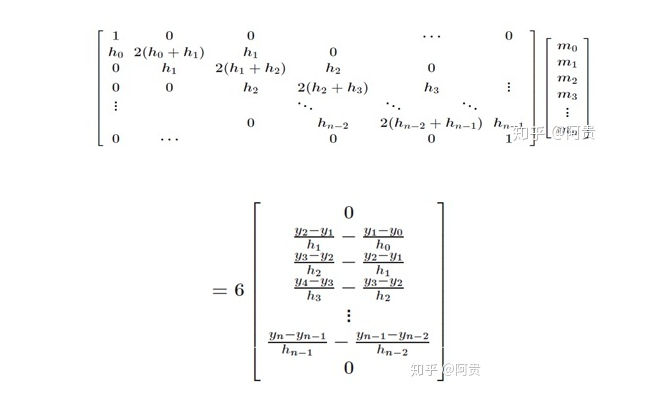
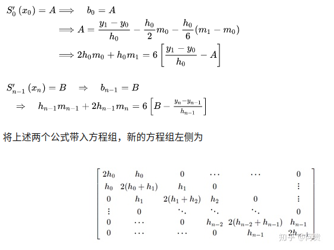
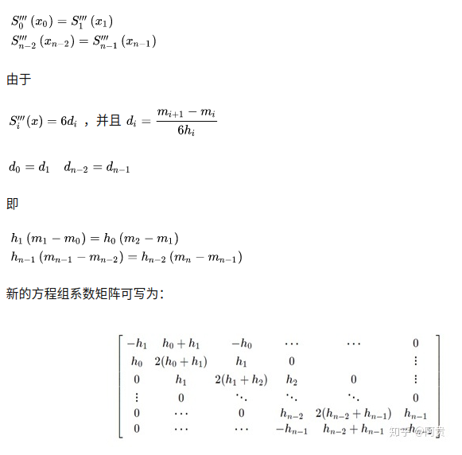
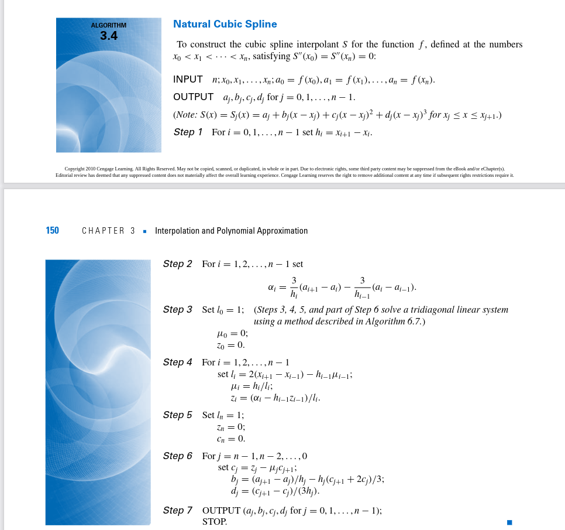

三次样条(cubic spline)插值
已知某些点而不知道具体方程时候，通常有拟合和插值两种做法。拟合不要求方程通过所有的已知点，整体趋势一致。插值则是每个已知点都必会穿过，但是高阶会出现龙格现象，所以一般采用分段插值。而三次样条插值则是分段采用一元三次方程进行插值
问题定义
已知n+1个点$[(x_0, y_0), (x_1, y_1),…,(x_{n-1}, y_{n-1}), (x_n, y_n)]$，n个区间段为$[(x0, x1), (x1, x2),…,(x_{n-1}, x_n)]$三次样条就是说每个小区间的曲线是一个三次方程，三次样条方程满足以下条件:
- 在每个分段小区间$[x_i, x_{i+1}], S(x)=S_i(x) = a_i + b_ix + c_ix^2 + d_ix^3$
- 满足插值条件，即$S(x_i) = y_i\qquad(i=0,1,…,n)$
- 曲线光滑，即$S(x), S’(x), S^{‘’}(x)$连续
每个区间$S_i(x)$都有个四个未知数$(a_i, b_i, c_i, d_i)$,有n个小区间，则有4n个未知数，要解出这些未知数，则我们需要4n个方程来求解。
求解
- 所有n-1个内部端点都满足$S_i(x_{i+1}) = y_{i+1}, S_{i+1}(x_{i+1})=y_{i+1}$,则有2(n-1)个方程，再加上首尾两个端点分别满足第一个方程和最后一个方程，则有2n个方程。
- 其次n-1个内部点的一阶导数应该是连续的，即在第i区间的末点和第i+1区间的起点是同一个点，它们的一阶导数应该也相等,即$S_{i}^{‘}(x_{i+1}) = S_{i+1}^{‘}(x_{i+1})$, 则有n-1个方程。
-
其次n-1个内部点的二阶导数应该是连续的，即在第i区间的末点和第i+1区间的起点是同一个点，它们的二阶导数应该也相等,即$S_{i}^{‘’}(x_{i+1})=S_{i+1}^{‘’}(x_{i+1})$则有n-1个方程。
- 边界条件指定最后两个方程
- 自然边界(Natural Spline)：指定端点二阶导数为0, $S_{0}^{‘’}(x_0) = 0 = S_{n}^{‘’}(x_{n})$
- 固定边界 ( Clamped Spline ): 指定端点一阶导数，这里分别定为A和B,$S_{0}^{‘}(x_0) = A,S_{n}^{‘}(x_{n}) = B$
- 非扭结边界( Not-A-Knot Spline ): 强制第一个插值点的三阶导数值等于第二个点的三阶导数值，最后第一个点的三阶导数值等于倒数第二个点的三阶导数值.即 $S_{0}^{‘’’}(x_0) = S_{1}^{‘’’}(x_1), S_{n-1}^{‘’’}(x_{n-1}) = S_{n}^{‘’’}(x_n)$
由以上3点和边界边界条件便可以得到4n个方程。
具体推导
构造$S_i(x), S’_i(x), S’‘_i(x)$ \(\begin{aligned} S_i(x) &= a_i + b_i(x-x_i) + c_i(x-x_i)^2 + d_i(x-x_i)^3 \qquad(1)\\ S'_i(x) &= b_i + 2c_i(x-x_i) + 3d_i(x-x_i)^2 \\ S''_i(x) &= 2c_i + 6d_i(x-x_i) \\ \end{aligned}\)
- 由$(1)$得 \(\begin{aligned} S_i(x_i) &= a_i + b_i(x_i-x_i) + c_i(x_i-x_i)^2 + d_i(x_i-x_i)^3 = y_i \\ \therefore a_i &= y_i \\ \end{aligned}\)
- 用$h_i=x_{i+1} - x_i$表示步长
\(\begin{aligned} S_i(x_{i+1}) &= a_i + b_i(x_{i+1}-x_i) + c_i(x_{i+1}-x_i)^2 + d_i(x_{i+1}-x_i)^3 = y_{i+1} \\ S_i(x_{i+1}) &= a_i + h_ib_i + h_i^2c_i + h_i^3d_i = y_{i+1} \\ \therefore a_i + h_ib_i + h_i^2c_i + h_i^3d_i &= y_{i+1} \\ \end{aligned}\) - 由$S_{i}^{‘}(x_{i+1})=S_{i+1}^{‘}(x_{i+1})$得到：
\(\begin{aligned} S'_i(x_{i+1}) &= b_i + 2c_i(x_{i+1}-x_i) + 3d_i(x_{i+1}-x_i)^2 = b_i + 2h_ic_i +3h_i^2d_i\\ S'_{i+1}(x_{i+1}) &= b_{i+1} + 2c_{i+1}(x_{i+1}-x_{i+1}) + 3d_{i+1}(x_{i+1}-x_{i+1})^2 \\ \therefore b_i + 2h_ic_i +3h_i^2d_i &= b_{i+1} \\ \end{aligned}\) - 由$S_{i}^{‘’}(x_{i+1})=S_{i+1}^{‘’}(x_{i+1})$得到： \(\begin{aligned} S''_i(x_{i+1}) &= 2c_i + 6d_i(x_{i+1}-x_i) \\ S''_{i+1}(x_{i+1}) &= 2c_{i+1} + 6d_{i+1}(x_{i+1}-x_{i+1}) \\ \therefore 2c_i + 6h_id_i &= 2c_{i+1} \\ \end{aligned}\)
- 设$m_i = S’‘_i(x_i) = 2*c_i$得到： \(\begin{aligned} 2c_i + 6h_id_i &= 2c_{i+1} \\ 2m_i + 6h_id_i &= m_{i+1} \\ \therefore d_i &= \dfrac{m_{i+1} - m_i}{6h_i}\\ c_i &= \dfrac{1}{2}m_i \\ \end{aligned}\)
- 将$a_i,c_i,d_i$代入$a_i + h_ib_i + h_i^2c_i + h_i^3d_i = y_{i+1}$可得： \(\begin{aligned} y_i + h_ib_i + h^2_i*(\dfrac{1}{2}m_i) + h^3_i*(\dfrac{m_{i+1} - m_i}{6h_i}) &= y_{i+1} \\ \therefore b_i &= \dfrac{y_{i+1} - y_i}{h_i} - \dfrac{h_i}{2}m_i - \dfrac{h_i}{6}(m_{i+1} - m_i) \\ \end{aligned}\)
- 将$a_i,b_i,c_i,d_i$代入$b_i + 2h_ic_i +3h_i^2d_i = b_{i+1}$可得:
\(\begin{aligned}
\dfrac{y_{i+1} - y_i}{h_i} - \dfrac{h_i}{2}m_i - \dfrac{h_i}{6}(m_{i+1} - m_i) + 2h_i(\dfrac{1}{2}m_i) + 3h_i^2(\dfrac{m_{i+1} - m_i}{6h_i}) &= \dfrac{y_{i+2} - y_{i+1}}{h_{i+1}} - \dfrac{h_{i+1}}{2}m_{i+1} - \dfrac{h_{i+1}}{6}(m_{i+2} - m_{i+1}) \\
h_im_i + 2(h_i + h_{i+1})m_{i+1} + h_{i+1}m_{i+2} &= 6(\dfrac{y_{i+2} - y_{i+1}}{h_{i+1}} - \dfrac{y_{i+1} - y_i}{h_i}) \\
\end{aligned} \\\)
- 其中左边跟$m_i$相关，而右边都是已知的，因此可以构造一个以m为未知数的线性方程组
-
在自然边界条件时, $m_0 = 0, m_n = 0$:
因此可以高斯消元,Givens Rotation等方式求得$m$从而得到$a_i,b_i,c_i,d_i$
-
在夹持边界条件下：
 -
在非扭结边界条件下：

在自然条件下，除了构造矩阵显性的求解$Ax=b$，还可以通过数值分析[numerical_analysis_9th.pdf page149]的方法求解: 
代码实现
1
2
3
4
5
6
7
8
9
10
11
12
13
14
15
16
17
18
19
20
21
22
23
24
25
26
27
28
29
30
31
32
33
34
35
36
37
38
39
40
41
42
43
44
45
46
47
48
49
50
51
52
53
54
55
56
57
58
59
60
61
62
63
64
65
66
67
68
69
70
71
72
73
74
75
76
77
78
79
80
81
82
83
84
85
86
87
88
89
90
91
92
93
94
95
96
97
98
99
100
101
102
103
104
105
106
107
108
109
110
111
112
113
114
115
116
117
118
119
120
121
122
123
124
125
126
127
128
129
130
131
132
133
134
135
136
137
138
139
140
141
142
143
144
145
146
147
148
149
150
151
152
153
154
155
156
157
import math
import numpy as np
import bisect
class Spline:
"""
Cubic Spline class
"""
def __init__(self, x, y):
self.b, self.c, self.d, self.w = [], [], [], []
self.x = x
self.y = y
self.nx = len(x) # dimension of x
h = np.diff(x) # x(i+1) - x(i)
# calc coefficient c
self.a = [iy for iy in y]
# Ax = B
A = self.__calc_A(h)
B = self.__calc_B(h)
# 解Ax = B，得到的m = 2×c，再构建B的时候除了2,所以此处m = c
self.c = np.linalg.solve(A, B)
# print(self.c1)
# calc spline coefficient b and d
for i in range(self.nx - 1):
self.d.append((self.c[i + 1] - self.c[i]) / (3.0 * h[i]))
tb = (self.a[i + 1] - self.a[i]) / h[i] - h[i] * \
(self.c[i + 1] + 2.0 * self.c[i]) / 3.0
self.b.append(tb)
def calc(self, t):
"""
Calc position
if t is outside of the input x, return None
"""
if t < self.x[0]:
return None
elif t > self.x[-1]:
return None
i = self.__search_index(t)
dx = t - self.x[i]
result = self.a[i] + self.b[i] * dx + \
self.c[i] * dx ** 2.0 + self.d[i] * dx ** 3.0
return result
def calcd(self, t):
"""
Calc first derivative
if t is outside of the input x, return None
"""
if t < self.x[0]:
return None
elif t > self.x[-1]:
return None
i = self.__search_index(t)
dx = t - self.x[i]
result = self.b[i] + 2.0 * self.c[i] * dx + 3.0 * self.d[i] * dx ** 2.0
return result
def calcdd(self, t):
"""
Calc second derivative
"""
if t < self.x[0]:
return None
elif t > self.x[-1]:
return None
i = self.__search_index(t)
dx = t - self.x[i]
result = 2.0 * self.c[i] + 6.0 * self.d[i] * dx
return result
def __search_index(self, x):
"""
search data segment index
"""
return bisect.bisect(self.x, x) - 1
def __calc_A(self, h):
"""
calc matrix A for spline coefficient c
"""
A = np.zeros((self.nx, self.nx))
A[0, 0] = 1.0
for i in range(self.nx - 1):
if i != (self.nx - 2):
A[i + 1, i + 1] = 2.0 * (h[i] + h[i + 1])
A[i + 1, i] = h[i]
A[i, i + 1] = h[i]
A[0, 1] = 0.0
A[self.nx - 1, self.nx - 2] = 0.0
A[self.nx - 1, self.nx - 1] = 1.0
# print(A)
return A
def __calc_B(self, h):
"""
calc matrix B for spline coefficient c
"""
B = np.zeros(self.nx)
for i in range(self.nx - 2):
B[i + 1] = 3.0 * (self.a[i + 2] - self.a[i + 1]) / \
h[i + 1] - 3.0 * (self.a[i + 1] - self.a[i]) / h[i]
return B
class NumericalAnalysisSpline(Spline):
def __init__(self, x, y):
self.nx = len(x)
self.a, self.b = np.zeros(self.nx), np.zeros(self.nx)
self.c, self.d = np.zeros(self.nx), np.zeros(self.nx)
self.x = np.copy(x)
self.a = np.copy(y)
self.__cal()
def __cal(self):
l = np.zeros(self.nx)
u = np.zeros(self.nx)
z = np.zeros(self.nx)
A = np.zeros(self.nx)
h = np.diff(self.x)
n = self.nx - 1
for i in range(1, n):
A[i] = 3 * (self.a[i + 1] - self.a[i]) / h[i] - 3 * (self.a[i] - self.a[i - 1]) / h[i - 1];
l[0] = 1
for i in range(1, n):
l[i] = 2 * (self.x[i + 1] - self.x[i - 1]) - h[i - 1] * u[i - 1]
u[i] = h[i] / l[i];
z[i] = (A[i] - h[i - 1] * z[i - 1]) / l[i]
l[n] = 1
for j in range(n-1, -1, -1):
self.c[j] = z[j] - u[j] * self.c[j + 1]
self.b[j] = (self.a[j + 1] - self.a[j]) / h[j] - h[j] * (self.c[j + 1] + 2 * self.c[j]) / 3
self.d[j] = (self.c[j + 1] - self.c[j]) / (3 * h[j])
其中2d样条插值(参数方程)的实现如下，有关航向和曲率的解释见对应的文章
1
2
3
4
5
6
7
8
9
10
11
12
13
14
15
16
17
18
19
20
21
22
23
24
25
26
27
28
29
30
31
32
33
34
35
36
37
38
39
40
41
42
43
44
45
46
47
48
49
50
51
52
53
54
55
56
57
58
59
60
61
62
63
64
class Spline2D:
"""
2D Cubic Spline class
"""
def __init__(self, x, y):
self.s = self.__calc_s(x, y)
self.sx = Spline(self.s, x)
self.sy = Spline(self.s, y)
def __calc_s(self, x, y):
dx = np.diff(x)
dy = np.diff(y)
# print("dx:", dx)
# print("dy:", dy)
self.ds = np.hypot(dx, dy)
# print("ds:", self.ds)
s = [0]
s.extend(np.cumsum(self.ds))
return s
def calc_position(self, s):
"""
calc position
"""
x = self.sx.calc(s)
y = self.sy.calc(s)
return x, y
def calc_curvature(self, s):
"""
calc curvature
"""
dx = self.sx.calcd(s)
ddx = self.sx.calcdd(s)
dy = self.sy.calcd(s)
ddy = self.sy.calcdd(s)
k = (ddy * dx - ddx * dy) / ((dx ** 2 + dy ** 2)**(3 / 2))
return k
def calc_yaw(self, s):
"""
calc yaw
"""
dx = self.sx.calcd(s)
dy = self.sy.calcd(s)
yaw = math.atan2(dy, dx)
return yaw
def calc_spline_course(x, y, ds=0.1):
sp = Spline2D(x, y)
s = list(np.arange(0, sp.s[-1], ds))
rx, ry, ryaw, rk = [], [], [], []
for i_s in s:
ix, iy = sp.calc_position(i_s)
rx.append(ix)
ry.append(iy)
ryaw.append(sp.calc_yaw(i_s))
rk.append(sp.calc_curvature(i_s))
return rx, ry, ryaw, rk, s